Comparison with state-of-the-arts
In this experiment, we evaluate JSNEAT’s accuracy and compare it with the state-of-the-art approaches JSNice and JSNaughty.
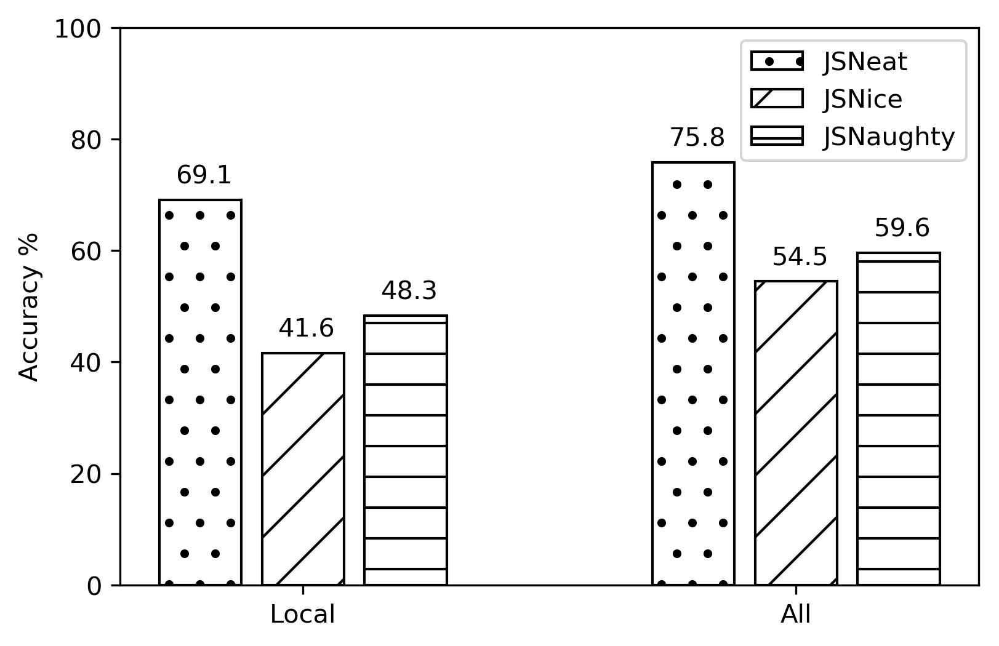Accuracy Comparison
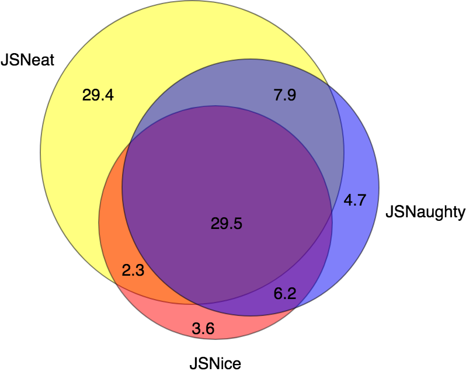Overlapping among Results from Three Tools
In modern Web development, program understanding plays an equally important role. Web technologies and programming languages require the exposure of source code to Web browsers in the client side to be executed there. To avoid such exposure, the source code such as JavaScript (JS) files are often obfuscated in which the variable names are minified, i.e., the variable names are replaced with short, opaque, and meaningless names. The intention has two folds. First, it makes the JS files smaller and thus are quickly loaded to improve performance. Second, minification diminishes code readability for the readers, while maintaining the program semantics. Due to those reasons, there is a natural need to automatically recover the minified code with meaningful variable names. That's why JSNeat was born.
A minified code from real-world
The original code of the minified code
The name recovering process of variables in minified code is affected by multiple factors. Let us illustrate these factors through the following observations:
Each individual variable has certain properties and plays particular roles in the code. Thus, the name of a variable is intuitively affected by its properties and roles. In a function, a variable might collaborate with other variables to implement the function. Consequently, the recovering name for a variable might be influenced by the name of others. Within a function, e.g., getClipboardContent, a variable name, e.g., contentType is affected by the specific task of the function that is functionally described by the function’s name
The intuition for this context is that to recover the name of a variable, one could use its own context based on its own properties and roles in the code. By properties of a variable, we refer to the methods or fields to which a variable of certain type can access. By the role of a variable, we refer to its usage context with the method calls or field accesses that were not minified.
The single-variable usage context of a variable is presented by a relation graph (RG) that is a directed graph in the shape of a star. The center vertex of the RG represents the variable. The other vertices represent the methods/fields in method calls/field accesses, respectively, and are labeled with their names. Edges represent relations and are labeled with relation types.
To achieve a specific programming task, developers use one or multiple variables in their code. Because the variables all play their roles in the code, their names are often relevant and consistent with one another in order to achieve the common task in the function to which they belong.
In a program, a function has its functionality and is written to realize a specific task. Each variable used in that function plays a certain role toward that task. Thus, the names of variables are relevant to the task of the function and often consistent with one another.
This section presents JSNEAT, our approach to recover the variable names in minified code using the combination of those above contexts. Given a minified JS file, whose variables have been minified, JSNEAT produces a recovered JS file in which all variables are recovered with meaning names.
In this experiment, we evaluate JSNEAT’s accuracy and compare it with the state-of-the-art approaches JSNice and JSNaughty.
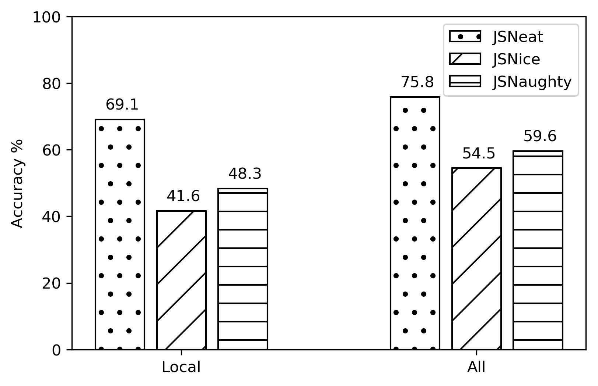Accuracy Comparison
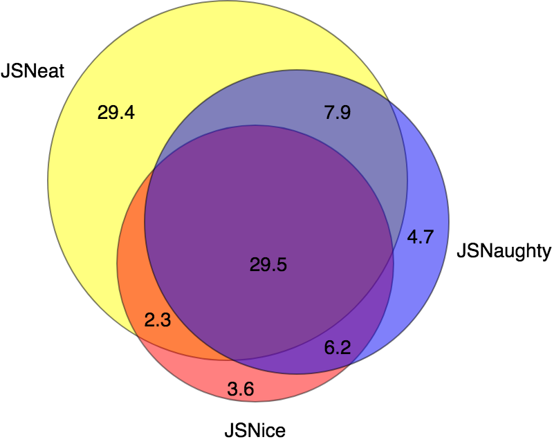Overlapping among Results from Three Tools
This experiment aims to evaluate how different combinations of contexts contribute to JSNEAT’s overall accuracy
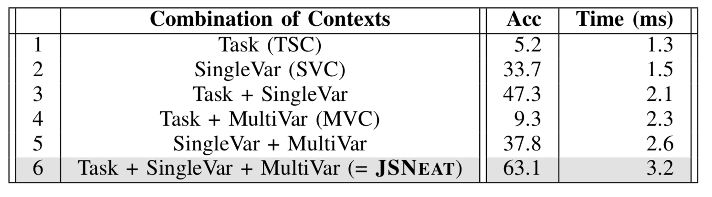Impact of Contexts on Accuracy and Recovery Time
To study different factors that have impact on JSNEAT’s accuracy, in our entire dataset, we randomly chose one fold for testing and the remaining 9 folds for training. We studied the following factors: relation graph size, type of relation edges, thresholds, beam widths, pair or triple associations, different weight parameters, and data size.
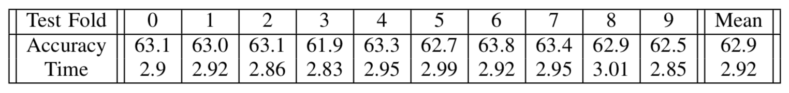10-fold Cross Validation Evaluation for JSNEAT
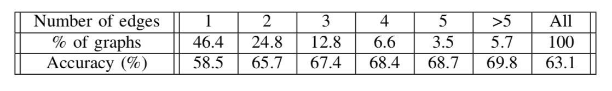Accuracy by Relation Graphs’ Sizes
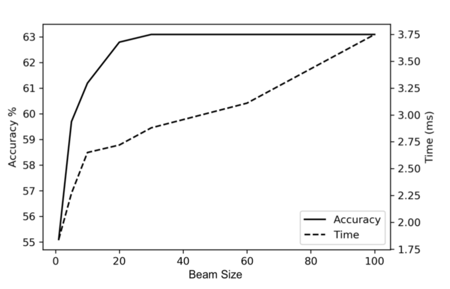Impact of Beam Size on Accuracy and Running Time
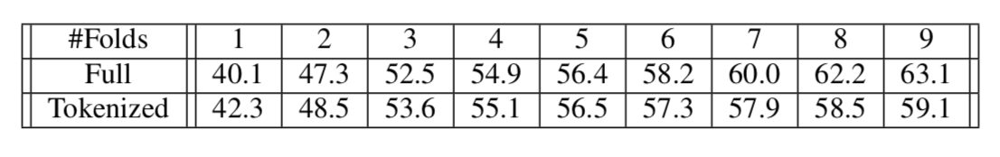Impact of Training Data’s Size on Accuracy
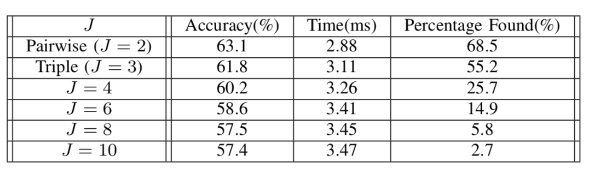Impact of Assoc Score J on Accuracy and Time
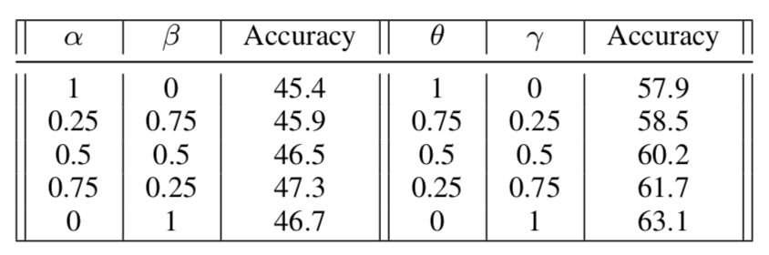Sensitivity Analysis on Combination Parameters
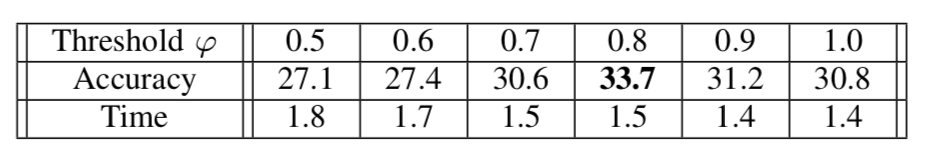Impact of Threshold φ on Accuracy
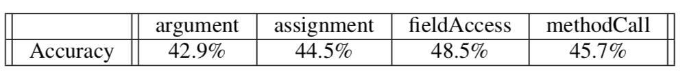Impact of Relation Types in RGs to Accuracy
All experiments were run on a Linux computer server with twenty Intel Xeon 2.2GHz processors, 256GB RAM. As seen, the time to recover for a file or a for a variable with JSNEAT is twice as fast as with JSNice and 4x as fast as with JNaughty. More importantly, JSNEAT’s training time is 4x faster than JSNice and 6x faster than JSNaughty. This can be achieved due the nature of information retrieval in JSNEAT, in comparison to machine learning in JSNice and JSNaughty
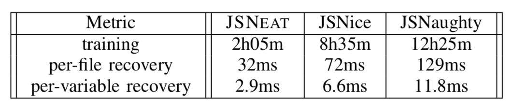Running Time Comparison
We collected a corpus of 12,000 open-source JavaScript projects from GitHub with highest ratings.
Download links:
1. Corpus (Download)
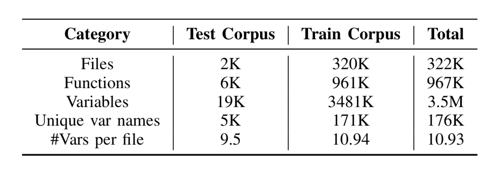Data collection
To build the relation graphs, we used Rhino to parse the JS files and extract the context information. Table belows shows the statistics of our dataset G of relation graphs.
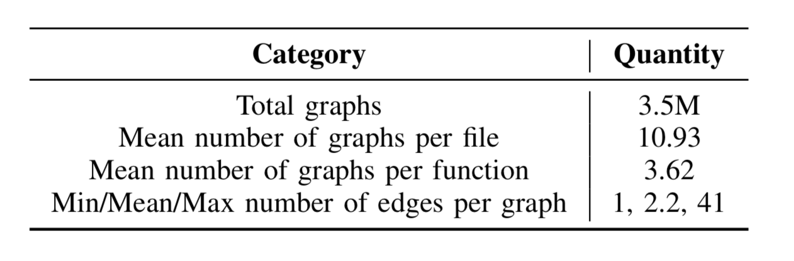Database of Relation Graphs

In the future, we are planing to using this technqiue to apply for various programming language.